第13章 基本除法方案（Basic Division Schemes）
本章导读
除法是四则运算中最”别扭”的一个：乘法是”生成部分积再加”，除法却是”猜一位商、试减、看正负、错了还得回退”。这个试商-回退的串行依赖决定了除法器的基本结构。本章讲恢复余数（restoring）、不恢复余数（nonrestoring）与 SRT 除法，它们的核心区别就在于如何处理”试错了”这件事。
还有一条贯穿全章的视角值得先立起来：除法与乘法都是多操作数加法问题。乘法要加的是 \(k\) 个部分积，除法要加的是 \(k\) 个带符号的 \(\pm q_j 2^j d\)。因此提速只有两条路——减少操作数个数（走高位基数，第 14 章）或把加操作本身做快（用进位保存形式表示部分余数，第 14.2 节）。唯一的额外麻烦是：除法的这些操作数不是先验已知的，它们由商数字决定，而商数字又依赖中间部分余数的相对大小——这个”鸡生蛋”的依赖，正是除法比乘法难的根本原因。
13.1 移位/减除法算法（Shift/Subtract Division Algorithms）
纸笔除法的机械化：\(z / d\)，逐位确定商 \(q\)。维护部分余数（partial remainder） \(s\)，每拍：
- \(s \leftarrow 2s\)（左移，补入被除数下一位）；
- 试减：\(s - d\)；
- 若结果 \(\ge 0\)，商本位为 1，保留差值；否则商本位为 0，恢复原值。
\(k\) 位商需 \(k\) 次迭代，每拍一次加减法 + 一次符号判断——符号判断在关键路径上。
用位点（dot notation）表示能看清这个过程的几何形状。被除数 \(z\) 的 8 位散在 8 列中，除数 \(2^k d\)（在 8 位除 4 位的例子里 \(k=4\)，故除数为 160）按列对齐后逐次右移一位，每次与部分余数相减，所得差值的符号决定商位——这就是图 13.1（见本章插图区）的图形，它与阵列乘法器的位点图恰好互为”倒影”。要注意被减数（部分余数）的位宽比除数大，所以第 9.3 节关于”借位传播”的讨论在这里同样适用；部分余数寄存器通常上 \(k\) 位参与运算、下 \(k\) 位留作商寄存器。
13.2 程序化除法（Programmed Division）
软件实现除法循环的历史与乘法一样长。有趣的是商 0 恢复的处理：软件里自然是”先存旧值再试减”；硬件上则可以并行算 \(s\) 与 \(s - d\) 再选择（carry-select 思想又出现了）。
程序化除法里有一个容易被忽略的技巧：符号判断可以借机器现有的标志位完成，而且不需要为无符号与有符号各写一套循环。把部分余数移位后存入 \(R_s\)、除数存入 \(R_d\)，用一条减法指令得 \(R_s - R_d\)，再查进位标志：进位为 1 表示 \(R_s \ge R_d\)（商位取 1），进位为 0 表示 \(R_s < R_d\)（商位取 0）。此时正确的中间结果应保留 \((2^k + R_s) - R_d\)，其中 \(2^k\) 是移入进位标志的部分余数最高位。由于
\[ (2^k + R_s) - R_d = R_s + (2^k - R_d) = R_s + R_d \text{ 的 2 的补码} \]
即使做的是无符号除法，用 2 的补码减法指令也能在两种情形下都得到正确结果。寄存器用法上，除法与乘法几乎对称：与乘数可以放在部分积寄存器的低半部分一样，商与被除数一起向高位流动而腾出的低位空间可以共享，因此商寄存器与部分余数寄存器可以是同一个。
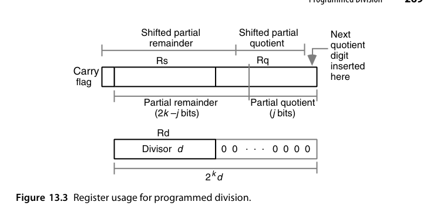
除去取操作数与存结果的指令（任何实现都需要），一个除法指令由 \(6k+3\) 到 \(8k+3\) 条机器指令完成；更精确地说，若商的二进制表示中有 \(w\) 个 1，则执行 \(6k + 2w + 3\) 条指令——因为商位为 0 的迭代里减法与自增指令被跳过，这是运行时间依赖 \(w\) 的原因。对 32 位操作数，平均要 200 多条指令；即使有专用指令承担循环内的部分功能，循环体也至少需要 32 条指令。这就解释了硬件除法器对数值密集型应用的必要性。至于没有硬件除法器的微程序处理器，则会用一个与图 13.4 极其相似的微例程，出于与第 9.2 节末尾相同的理由，它显著快于等价的机器语言程序，但仍远慢于硬连线实现。
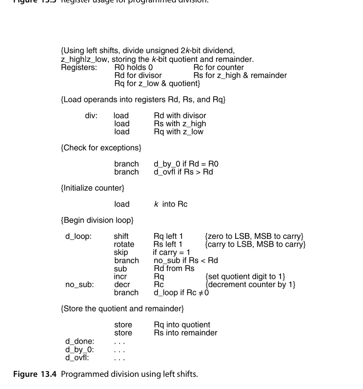
13.3 恢复余数除法器（Restoring Hardware Dividers）
恢复（restoring）方案忠实复刻纸笔流程：试减为负 → 加回除数恢复 → 移位继续。缺点明显：每拍最坏两次加法（减一次、加回一次），且恢复操作使迭代节奏不均匀。硬件数据通路：部分余数寄存器（\(2k\) 位，与商寄存器共用移位）、加减法器、符号判断控制——与乘法器同构，只是控制方向相反。
图 13.5 给出了无符号整数顺序除法的硬件实现。每个周期 \(j\) 开始时，部分余数 \(s^{(j-1)}\) 左移、其最高位被移入一个专用触发器；随后计算试探差 \(2s^{(j-1)} - q_{k-j}(2^k d)\)。注意那个 \(2^k\) 因子：它意味着除数只与部分余数的高 \(k\) 位对齐参与试探减，低半部分不受影响。商位的判定规则是：若移出的最高位为 1，或试探差为正（\(c_{out}=1\)），则 \(q_{k-j} = 1\) 并把试探差载入部分余数寄存器的高半部；否则 \(q_{k-j}=0\)、部分余数保持不变。这里有一个实现选择值得指出：我们本可以总是把试探差载入寄存器、需要时再用一次补偿加法恢复回来——但那样硬件更慢，所以图 13.5 的 mux 方案（选择”载入试探差”还是”保持原值”）才是正解。
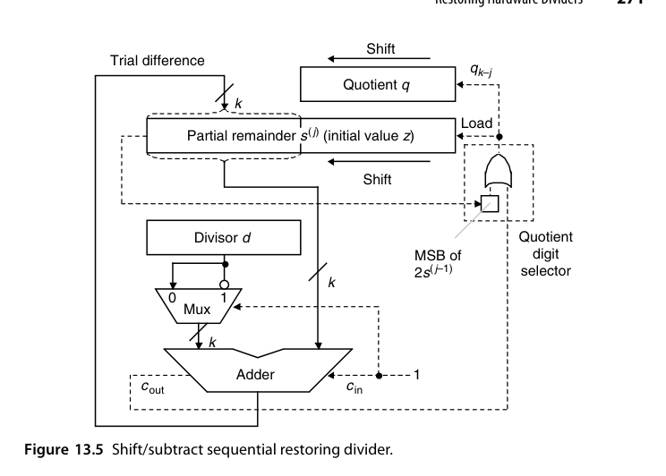
恢复除法对时序非常敏感。每个周期必须依次完成：寄存器移位 → 信号通过加法器传播 → 存储商位，因此试探差的符号必须在周期末（例如时钟下降沿）采样。这种”信号要跑到周期末尾才有效”的模式会拉长时钟周期，是促使人们转向不恢复除法的主要动机之一（13.4 节）。
下面用一组具体数字走一遍。取 \(z = (0111\,0101)_2 = 117\)，\(d = (1010)_2 = 10\)，商 4 位，\(2^kd = 160\)。首先判断溢出：\(z\) 的高 4 位 \((0111)_2 = 7 < (1010)_2 = 10\)，故无溢出。
| 周期 \(j\) | 初始/移位后 | 试减 \(\pm 2^kd\) | 新部分余数 \(s^{(j)}\) | 商位 |
|---|---|---|---|---|
| — | \(s^{(0)} = 117\) | — | \(117\) | — |
| 1 | \(2s^{(0)} = 234\) | \(-160\) | \(74\)（正） | \(q_3 = 1\) |
| 2 | \(2s^{(1)} = 148\) | \(-160\) | \(-12\)（负）→ 恢复为 148 | \(q_2 = 0\) |
| 3 | \(2s^{(2)} = 296\) | \(-160\) | \(136\)（正） | \(q_1 = 1\) |
| 4 | \(2s^{(3)} = 272\) | \(-160\) | \(112\)（正） | \(q_0 = 1\) |
最终部分余数寄存器中的值是 \(112\)，它是真实余数的 \(2^k = 16\) 倍，故余数 \(s = 112/16 = 7\)；商 \(q = (1011)_2 = 11\)。验算：\(11\times10 + 7 = 117\)，正确。第 2 个周期那一步就是恢复操作——为了它多付了一次加法。
对带符号操作数，基本除法方程 \(z = d\times q + s\) 加上两条约束 \(\text{sign}(s) = \text{sign}(z)\) 与 \(|s| < |d|\) 就唯一确定了商与余数。看四组符号组合：\(5/3 \Rightarrow q=1, s=2\)；\(5/(-3) \Rightarrow q=-1, s=2\)；\((-5)/3 \Rightarrow q=-1, s=-2\)；\((-5)/(-3) \Rightarrow q=1, s=-2\)。可以看出 \(q\) 与 \(s\) 的绝对值只由操作数的绝对值决定，而符号可以事后修正（商的符号 = 被除数符号 \(\oplus\) 除数符号，余数符号跟随被除数）。因此恢复除法处理带符号数的首选办法是”间接算法”——先转成无符号运算，最后按符号规则调整符号位或做取补。
\(s = z \bmod d\) 在这里采用的是截断（truncation）语义——C 语言族的选择，也是硬件最自然的实现。它与数学上的地板（flooring）语义不同：\(-5/3\) 按截断是 \(q=-1, s=-2\)，按地板则是 \(q=-2, s=1\)。做除法器前必须先确认目标语义，否则与软件栈的行为对不上。
13.4 不恢复余数与有符号除法（Nonrestoring and Signed Division）
不恢复余数（nonrestoring）的洞察：恢复 + 移位 + 再减 = 移位 + 加。代数上 \(2(s - d) + d = 2s - d\)，所以试减失败后不用加回，下一拍改成加 \(d\) 即可。每拍固定一次加减：
- 当前部分余数 \(\ge 0\)：商本位 1，下一拍减 \(d\)；
- 部分余数 \(< 0\)：商本位 0，下一拍加 \(d\)。
迭代节奏完全均匀（每拍一次加法），控制极简。代价：结束时若余数为负需一次最终修正（加回 \(d\)），商的最低位可能需要舍入修正。
把这套推理写严格一点。设本周期开始时的移位后部分余数为 \(u\)。若（按恢复法）把 \(u - 2^kd\) 恢复为正确的 \(u\)，下一拍应得 \(2u - 2^kd\)。若不恢复、直接带着错误值 \(u - 2^kd\) 往下走，继续移位再减会得到 \(2(u-2^kd) - 2^kd = 2u - 3\times 2^kd\)，显然不对；但只要改成加，就得到 \(2(u - 2^kd) + 2^kd = 2u - 2^kd\)——与恢复后所得完全相同。所以规则是：部分余数变负时保留这个”错误”的值，记下正确的商位，并在下一拍做加法而非减法。同一个例子换成不恢复算法，差别就在第 2 周期没有回退、第 3 周期用的是 \(-24\) 这个”临时错误值”：
| 周期 \(j\) | 初始/移位后 | 本拍操作 | 新部分余数 \(s^{(j)}\) | 商位 | 下拍动作 |
|---|---|---|---|---|---|
| — | \(s^{(0)} = 117\) | — | \(117\) | — | 减 |
| 1 | \(2s^{(0)} = 234\) | \(-160\) | \(74\)（正） | \(q_3 = 1\) | 减 |
| 2 | \(2s^{(1)} = 148\) | \(-160\) | \(-12\)（负） | \(q_2 = 0\) | 加 |
| 3 | \(2s^{(2)} = -24\) | \(+160\) | \(136\)（正） | \(q_1 = 1\) | 减 |
| 4 | \(2s^{(3)} = 272\) | \(-160\) | \(112\)（正） | \(q_0 = 1\) | — |
结果与恢复法一致：\(s = 112/16 = 7\)，\(q = (1011)_2 = 11\)；图 13.8 把两种算法的轨迹画在同一张”部分余数—时间”图上，恢复式在负值处有一个向上的回退折线，不恢复式则是一条连续折线（\(117 \to 234 \to 74 \to 148 \to -12 \to -24 \to 136 \to 272 \to 112\)）——恢复法多付的那一次加法，在这张图里看得见。
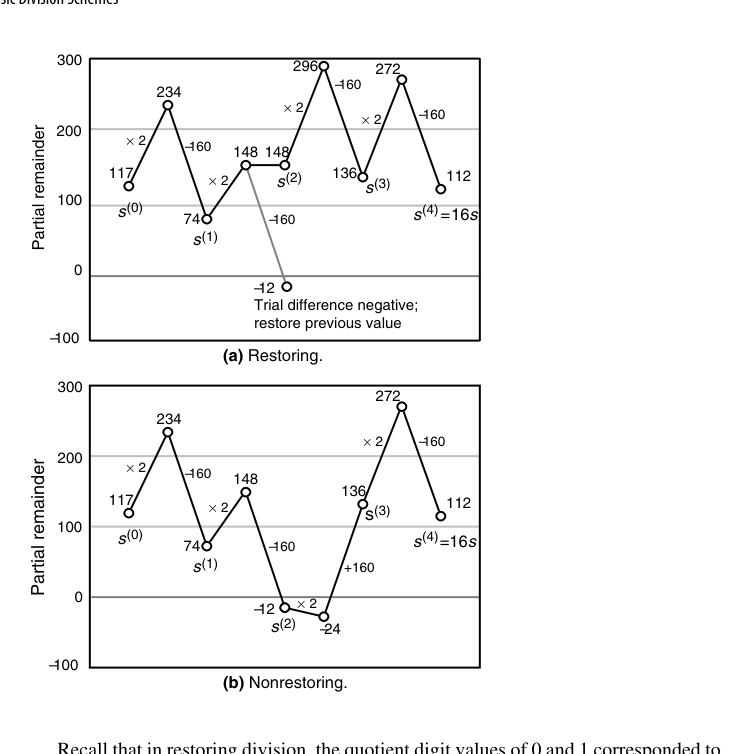
不恢复除法的硬件实现（图 13.10）比恢复式更简洁：每个周期开始把 \(s^{(j-1)}\) 左移、最高位移入专用触发器；商位由除数符号与部分余数符号之补异或得到（部分余数符号之补即 \(c_{out}\)，因为构成新部分余数的两项总是异号）。全部 \(k\) 位商算完后还需 2~4 个额外周期修正商与最终余数。把它的行为画成 Robertson 图（新部分余数 \(s^{(j)}\) 关于移位后旧部分余数 \(2s^{(j-1)}\)），商数字的选取规则一目了然：radix-2 不恢复除法的商数字只有 \(\{1,-1\}\)，判据就是 \(2s^{(j-1)}\) 的符号——一条穿过原点的水平分界线，简单到极致（图 13.11）。一旦允许商数字取 0（\(q_{-j} \in \{-1,0,1\}\)），分界线就不再是一条而是两条，中间夹出一条”什么都不做”的零带（图 13.12）——这条零带正是冗余的来源，也是 SRT 与高基数除法的几何起点。
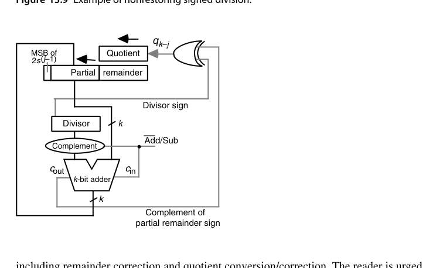
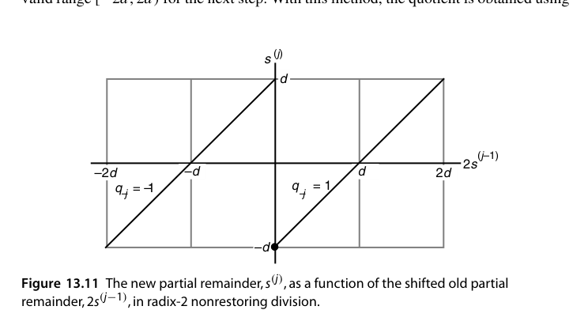
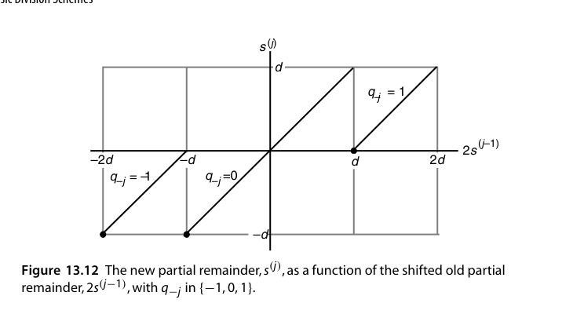
有符号除法的商数字选取规则也随之改写为：若 \(\text{sign}(s) = \text{sign}(d)\) 则 \(q_{k-j} = 1\)，否则 \(q_{k-j} = -1\)，即”让部分余数的符号向被除数的符号靠拢”。这条规则带来两个必须收尾的问题。其一，商要从 \(\{1,-1\}\) 数字集转换回标准二进制：先把所有 \(-1\) 替换为 0 得到 \(p\)（由 \(q_i = 2p_i-1\) 的关系），再把 \(p\) 的最高位取反、整体左移 1 位并在 LSB 补 1，所得即 2 的补码商；其正确性可由 \(\sum_{i=0}^{k-1}2^i = 2^k-1\) 直接验证。其二，最终余数符号若与被除数相反必须修正：给余数加减 \(2^kd\)、同时给商减/加 1——究其根本，数字集 \(\{1,-1\}\) 只能表示奇数，商如果是偶数，修正就不可避免。好在这个转换可以即时（on-the-fly）完成：在初始周期设定商的符号位，此后每次减法产生 1、每次加法产生 0，最后一个数字前再产生一个 1，不需要事后的长链进位传播。图 13.9（见本章插图区）给出了一个 2 的补码操作数的完整示例，涵盖余数修正与商转换/修正的全部环节。
不恢复余数的真正价值不在省那一次恢复加法，而在它把商数字集合扩展到 \(\{-1, +1\}\)——允许”负的商位”，这正是 SRT 除法（13.6 节）与冗余表示合流的入口。
13.5 除以常数（Division by Constants)
除以常数 \(d\) 可以变成乘法：\(z / d \approx z \times \lceil 2^m / d \rceil / 2^m\)，预计算”魔数（magic number）“\(\lceil 2^m / d \rceil\)，一次乘法 + 移位即得商。编译器每天都在做这个变换（x / 10 变成乘 0xCCCCCCCD 再右移）。误差分析要保证对所有输入商完全正确——魔数与移位量的选择有一套成熟的理论（Granlund-Montgomery 算法）。
讨论除以常数的理由与第 9.5 节”乘以常数”类似，但收益更明显——因为除法本来就比乘法慢得多。这里只考虑奇数除数：偶除数可以先除以一个奇数再右移，例如除以 20 就是先除以 5、再把结果右移 2 位。如果感兴趣的常数只有少数几个，最省事的办法是预计算它们的倒数、以适当精度存表，于是”除以常数”就变成”乘以常数倒数”。对许多小奇数除数还有一条更漂亮的路子：每个奇整数 \(d\) 都存在奇整数 \(m\)，使 \(d \times m = 2^n - 1\)，于是
\[ \frac{1}{d} = \frac{m}{2^n-1} = \frac{m}{2^n(1-2^{-n})} = \frac{m}{2^n}(1+2^{-n})(1+2^{-2n})(1+2^{-4n})\cdots \]
\(1/(1-2^{-n})\) 的展开含无穷多个形如 \(1+2^{-2^i n}\) 的因子，所以把 \(z\) 除以 \(d\) 就变成”先乘预计算的常数 \(m/2^n\)，再依次乘若干 \(1+2^{-j}\) 因子”——因子个数与字宽的对数成正比，而乘每个因子只需一次移位加一次加法。
看 \(d = 5\) 这个例子：由 \(5 \times 3 = 15 = 2^4-1\) 得 \(m=3\)、\(n=4\)，取 24 位精度时
\[ \frac{z}{5} = \frac{3z}{2^4-1} = \frac{3z}{16(1-2^{-4})} = \frac{3z}{16}(1+2^{-4})(1+2^{-8})(1+2^{-16}) \]
三个因子就够了，整个流程是”一次乘法 + 三次移位加”，全程没有除法指令。这类方案还有对应的硬件实现（用一个 \(s \in [0,2]\) 的两比特状态从高位向低位传播的线性阵列），延迟与面积与行波加法器同阶。
“除以常数 = 乘魔数”的代价是必须为每个常数单独验证正确性：\(2^m/d\) 的舍入方向、移位量的选择、以及边界值（\(z\) 取最大值、\(z\) 恰为 \(d\) 的倍数）都可能踩坑。这也是为什么现代编译器里”常量除法优化”是一个有大量测试用例的独立模块，而不是一行随手写死的移位。
13.6 基数 2 SRT 除法（Radix-2 SRT Division)
SRT（Sweeney-Robertson-Tocher）把不恢复思想与冗余商表示结合：
- 商数字集合 \(\{-1, 0, +1\}\)——允许”跳过”：部分余数接近 0 时商本位选 0，连加减都不用做；
- 选择规则只需看部分余数的最高几位（无需完整符号判断）：\(s \ge 1/2\) 选 \(+1\)，\(s \le -1/2\) 选 \(-1\)，否则选 0；
- 商以冗余形式产生，最后做一次”即时转换（on-the-fly conversion）“变成普通二进制——不需要最终减法。
三者的几何关系并排看最清楚：不恢复除法（图 13.11）只有一条原点分界线；允许 \(q \in \{-1,0,1\}\) 后（图 13.12）分出三条线、中间多出零带；到了 SRT（图 13.13），选择规则进一步化简为两条固定阈值线 \(\pm d\) 与 \(\pm d/2\)——选择只需比较部分余数与除数的简单倍数，而不需要做减法。请注意”跳过”这条规则的真正收益：在进位保存部分余数出现之后，跳过一次加法其实并不省什么（进位保存加法本身就非常快，判断”是否该跳过”的逻辑延迟与之相当）。SRT 的历史价值在于它把商数字选择从”精确比较”降级为”看几个高位”，从而为高基数、进位保存的除法器打开了大门。
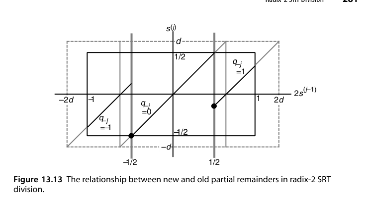
下面用一个完整的数值例子走一遍。取归一化小数 \(d = (0.1100)_2 = 0.75\)，被除数 \(z = (0.1000)_2 = 0.5\)（\(d \in [1/2,1)\) 满足归一化要求，\(z<d\) 故无溢出，真值 \(z/d = 2/3\)），商数字 \(q \in \{-1,0,1\}\)，选择阈值取 \(|2s| \ge 1/2\)。
| 周期 | \(2s^{(j-1)}\) | 商数字 | 新部分余数 \(s^{(j)}\) |
|---|---|---|---|
| 1 | \(1.0\) | \(q_{-1} = +1\) | \(1.0 - 0.75 = 0.25\) |
| 2 | \(0.5\) | \(q_{-2} = +1\) | \(0.5 - 0.75 = -0.25\) |
| 3 | \(-0.5\) | \(q_{-3} = -1\) | \(-0.5 + 0.75 = 0.25\) |
| 4 | \(0.5\) | \(q_{-4} = +1\) | \(-0.25\) |
| 5 | \(-0.5\) | \(q_{-5} = -1\) | \(0.25\) |
| 6 | \(0.5\) | \(q_{-6} = +1\) | \(-0.25\) |
商数字序列 \(+1,+1,-1,+1,-1,+1\) 的值为 \(2^{-1}+2^{-2}-2^{-3}+2^{-4}-2^{-5}+2^{-6} = 0.671875\)，与真值 \(0.666\ldots\) 的偏差在 \(2^{-6}\) 以内。可以看到商数字中出现了 \(-1\)——这正是冗余表示的具体形态，也是它不能用普通二进制移位直接读出的原因。现在做即时转换：把所有 \(-1\) 替换为 0 得 \(p = 110101\)，把 \(p\) 的最高位取反得 0，再左移一位、LSB 补 1，得到 \(0101011\)；\((0101011)_{\text{2的补码}} = 43\)，而 \(43/2^6 = 0.671875\)，与按数字加权求和的结果完全一致——转换全程没有做一次减法，也没有等待进位传播。
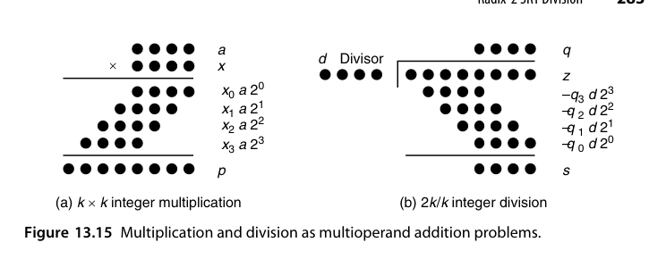
图 13.15 把乘法与除法的位点图并排放在一起，是本章最好的收束：乘法加的是 \(x_i a 2^i\)（系数先验已知），除法减的是 \(q_j d 2^j\)（系数由迭代决定）。结构同构、难度不同——差别全在”操作数是否先验已知”这一条上。
基数 2 SRT 的两个关键思想——冗余商数字与只看高位做选择——正是第 14 章高基数 SRT 的种子。Pentium FDIV bug（1.2 节）就出在 radix-4 SRT 的商数字选择表上，到时候会再提。
RTL 实践：rtl/ch13_4_nonrestoring_divider
16/8 无符号不恢复余数除法器：部分余数为带符号 9 位，每拍固定一次加减，8 拍出商，结尾按需修正余数：
wire signed [8:0] rem_shift = {rem[7:0], quos[7]}; // 左移补入被除数下一位
wire signed [8:0] rem_next = (rem >= 0) ? rem_shift - $signed({1'b0, d})
: rem_shift + $signed({1'b0, d});
// 商位 = (rem_next >= 0)；结束时 rem_next < 0 则 r = rem_next + d设计要点：
- 节奏均匀：不恢复式把恢复式的”减、（可能）加回”两步变成固定的一步加减，控制状态机极简；
- 前置条件：被除数高 8 位必须小于除数（商才能装进 8 位）——testbench 的随机激励用
$random % (d*256)保证这一约束，这也是硬件除法器规格书里的经典条款； - 最终修正：迭代结束若部分余数为负，加回除数得到真正的余数。
cd rtl/ch13_4_nonrestoring_divider
bash run_iverilog.sh # 或 bash run_verilator.sh本章小结
- 除法 = 试商-试减-修正的串行迭代，符号判断是关键路径。
- 恢复式忠实但节奏不均（117/10 例中第 2 拍要回退）；不恢复式每拍一次加减、均匀可控。
- 除常数 → 魔数乘法（\(1/5 = \frac{3}{16}(1+2^{-4})(1+2^{-8})(1+2^{-16})\)），编译器日常操作。
- SRT：冗余商数字 \(\{-1,0,+1\}\) + 固定阈值 \(\pm d/2\) 粗判，即时转换免去最终减法。
- 除法与乘法同为多操作数加法，区别只在操作数是否先验已知。
原书插图
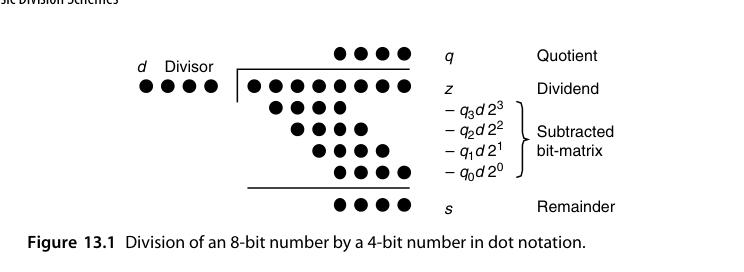
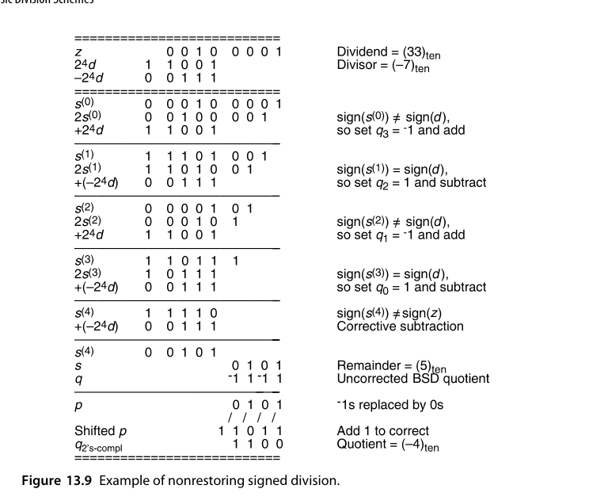